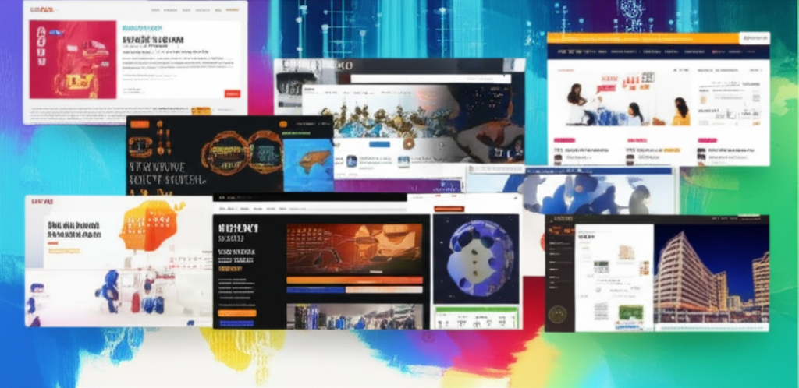

今日新聞內容涵蓋了產業動態、科技發展、健康醫療、社會議題以及訃聞等多個面向。從台塑網的電子交易市場到科技新報關注的科技趨勢，再到車輛工業的發展與健康方面的減重案例，以及社會議題的討論，都反映了當前台灣社會與產業的多元面向與發展趨勢。本次摘要將著重分析這些新聞背後可能代表的意義與關聯性。
台塑網電子交易市集以及GMI Cloud提供AI算力服務的報導，都顯示了台灣產業數位化的加速趨勢。台塑網的電子交易市集致力於建立供應鏈e化管理系統，顯示傳統產業對於提升效率、降低成本的需求日益增加。而GMI Cloud則瞄準AI應用市場，提供GPU算力租賃，幫助企業快速啟動AI專案，這也反映了AI技術在各產業應用的普及化趨勢。這兩者都強調了企業需要擁抱數位轉型，才能在激烈的市場競爭中保持領先。
兩則關於「178公斤男擺脫病態性肥胖」的新聞，以及「高血壓預防」的直播文章，都體現了民眾對於健康的日益重視。機器手臂輔助減重手術的成功案例，反映了醫療技術的進步，以及對於改善生活品質的積極探索。同時，對於高血壓等慢性疾病的預防與控制，也顯示了健康意識的提升。這暗示著健康產業在台灣具有相當大的發展潛力，從預防到治療，都有機會出現更多創新產品與服務。
「新‧二七部隊軍事雜談」在X平台分享的關於中國認知戰升級的報導，提醒我們資訊安全的重要性。假訊息的傳播方式日趨隱蔽，從直接恐嚇轉向「親台包裝」，增加了辨識的難度。這顯示了台灣社會需要提高媒體素養，增強對於資訊的判斷能力。此外，其他新聞內容也涉及社會議題，反映了台灣社會議題的多樣性與複雜性。
總體而言，今日新聞呈現了台灣在數位轉型、健康醫療、資訊安全等多個領域的發展現況與挑戰。企業需要擁抱數位化，民眾需要重視健康，社會需要警惕資訊戰。只有不斷學習、適應變化，才能在快速變遷的時代中保持競爭力，並建立更健康、安全的社會。